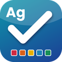

Avaliar atitudes aula a aula, sem papéis.
O VISTO regista a pontualidade, a atenção, a participação e o empenho de cada aluno em cada aula, junta as fichas e os trabalhos e calcula a nota, a síntese e o relatório para o encarregado de educação.
Dois programas, a mesma forma de trabalhar
Escolha o que serve melhor: só no seu computador, ou com conta no servidor do agrupamento e sincronização entre computadores e telemóvel.
VISTO Pf
Tudo no seu computador (Windows), sem contas nem servidores. O telemóvel liga-se ao computador pela rede da escola ou pela Internet.
- Funciona sem Internet
- Os dados ficam no seu computador
- App Android para avaliar na sala de professores
- Período de experiência de 30 dias

VISTO AgConta para cada professor no servidor do agrupamento: os dados sincronizam sozinhos entre computadores e com a app, e a direção gere as contas.
- Trabalha também sem rede (envia depois)
- Painel da direção: contas, escolas, cursos, resumos sem nomes de alunos
- Apoio aos colegas com aviso e registo
- Logotipos do agrupamento em todos os PDF
O que faz
Pensado para o dia a dia do professor — do ensino básico aos cursos profissionais.
Descarregar
Versão mais recente, sempre a partir deste endereço. Depois de instalado, o programa atualiza-se sozinho (ao abrir e de 6 em 6 horas) sem mexer nos seus dados.
Instalar
Execute o instalador. Se o Windows avisar que o programa «não é reconhecido»: «Mais informações» → «Executar mesmo assim».
Ativar a licença
Em Definições → Dados → Licença cole a chave que recebeu. Sem chave, o VISTO Pf funciona 30 dias em experiência.
Ligar o telemóvel
Em Definições → Telemóvel aparece um código QR: leia-o no telemóvel, instale a app e escreva o PIN.
Novidades da versão mais recente
—
Segurança e dados dos alunos
Os dados dos alunos são da escola. O VISTO foi desenhado para os proteger.
- Cada professor vê apenas os seus dados; a direção gere contas sem ver avaliações nem nomes de alunos.
- Palavras-passe guardadas com PBKDF2 e bloqueio de tentativas; ligações por HTTPS.
- O apoio técnico a um colega fica sempre registado e o colega é avisado.
- A app do telemóvel liga-se com PIN; pela Internet usa um túnel seguro (HTTPS).
- As atualizações são verificadas (SHA-256) antes de serem instaladas.
- Os dados nunca são apagados por falta de licença: podem sempre ser consultados e exportados.
Perguntas frequentes
Preciso de Internet?
Não para trabalhar. O VISTO Pf e o VISTO Ag gravam tudo no computador; a Internet só é usada para atualizações, para confirmar a licença (de vez em quando) e, se quiser, para a app do telemóvel fora da escola.
Funciona com cursos profissionais?
Sim: módulos, UFCD e UC, autoavaliação no fim de cada módulo, aulas não dadas com reposição e antecipação, e aviso das aulas que faltam até à data limite.
Posso experimentar antes de comprar?
Sim. O VISTO Pf funciona durante 30 dias sem chave. Depois, sem licença, abre em modo de consulta: vê, imprime e exporta os seus dados, mas não grava alterações.
Como obtenho uma licença ou o VISTO Ag para o meu agrupamento?
Contacte o autor do VISTO.
O código do programa está disponível?
Não. Esta página distribui apenas os instaladores e as apps.